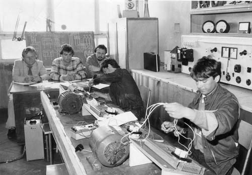

Почетоците на наставно-образовниот процес во училиштето датираат од 1958 година, врз основа
на
решението што е донесено на 7-X-1957 година за основање на индустриско училиште со практична
обука во Битола, со задача да подготвува квалификувани работници за потребите на
индустријата
преку две струки – машинска и електротехничка со тригодишно траење и капацитет од 300
ученици.
Бидејќи потребите од стручни кадри во битолското стопанство растеа, се наложи основање на
Техничко училиште кое со работа започна во 1960 година, а наскоро потоа Техничко училиште за
возрасни и училиштето за високо квалификувани работници (мајсторска школа). Оваа школа е
формирана по потреба и барање на тогашната фабрика за фрижидери Битола. Како што понатаму
растеа
потребите за стопанството, така и училиштето се ширеше и развиваше. Во 1961 година во
рамките на
училиштето е формирана и виша техничка школа. Таа подоцна се издвојува како посебна
образовна
институција, Технички факултет, во склопот на Универзитетот “Св.Климент Охридски” од Битола.

Развојот на индустријата во Битола бараше и нови кадри коишто не се оспособуваа во ниту едно
средно училиште во Битола. Затоа во учебната 1967/68 година почнува проширување на
структурните
типови на образование во училиштето и се формира отсек за слаба струја за квалификувани
механичари за радио-телевизија и електроакустика.
Исто така врз основа на нараснатите потреби од стручни кадри во текстилната индустрија во
Битола, дојде до отворање на текстилно училиште во состав на Центарот.
Потребите за стручни кадри за стопанството ја наложија потребата од оспособување на
стручен
наставен кадар. Токму заради тоа, во склоп на училиштето, се формира центар за вонредно
студирање на Вишата стручна педагошка школа од Риека-Република Хрватска. Постепеното
формирање на споменатите училишта, школи и центри и нивна концентрација во зградата на
индустриското училиште беше предуслов за основање на нова институција за образование на
стручни кадри, електро-машински училишен центар.

Овој училишен центар никогаш не бил механички збир на неколкуте типови и облици на
стручно
образование, туку организациона целина во која беше воспоставено внатрешно функционално
единство и во која се оспособуваа кадри од повеќе степени на стручното образование.
Така,
Индустриското, Техничкото, Техничкото за возрасни, Училиштето за високо квалификувани
работници , Вишата техничка школа и Наставниот центар за вонредно студирање ВСПШ-Риека
се
конципираа и прераснаа во нова образовно-воспитна институција ЕМУЦ”Ѓуро Салај” – Битола.
Неговата задача беше за потребите на стопанството да образува и оспособува:
- Квалификувани работници од металската и електротехничката насока, преку
индустриското
училиште со практична обука.
- Техничари и погонски техничари преку електромашинското техничко училиште и
техничкото
училиште за возрасни.
- Високо квалификувани работници од металската и електротехничката насока, преку
училиштето за висококвалификувани работници – мајсторска школа.
- Виши техничари (погонски инженери) од машинска и електротехничка насока, преку
вишата
техничка школа.
- Стручни наставници, за стручни предемети и практична настава од машинската и
електротехничката насока преку наставниот центар за вонредни студирања на ВСПШ –
Риека.
Во 1997 училиштето се преименува во ДСЕМУ ”Ѓорѓи Наумов”, а во 2006 година, со стапување во
сила
на новиот закон за локална самоуправа, во Средно општинско техничко училиште или скратено
СОТУ
”Ѓорѓи Наумов”.
Денес, Училиштето ги прати современите трендови за образување на квалитетни кадри од
електротехничката и машинската струка. Една од тие новини е и воведувањето на дуално стручно
образование почнувајќи од учебната 2019/2020 година.